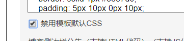
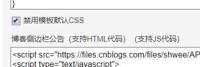

要定制你自己的博客园大体上分两种方式
一种是不需要js权限的：
比如在页脚HTML，页首HTML里加点结构，
给你的博客加上一个回到顶部的导航：
在页脚HTML里复制粘贴如下代码
<div class="scrollBtn" id="scrollBtn">
<ul class="clearfix"><li class="sB-goTop" id="goTop" style="display: list-item">
<a href="#top" title="回顶部"></a>
</li>
</ul>
</div>在页面定制css里复制如下代码：
.scrollBtn {
position: fixed;
right: 15px;
bottom: 45px;
width: 54px
}
.scrollBtn a {
display: inline-block;
width: 54px;
-webkit-transition: opacity .5s ease;
transition: opacity .5s ease;
text-align: center;
opacity: .6;
color: #fff;
background: url(http://images2015.cnblogs.com/blog/459873/201601/459873-20160127210900473-1080897398.png) no-repeat;
filter: alpha(opacity=60)
}
.scrollBtn li {
float: left;
margin-bottom: 5px
}
.scrollBtn a:hover {
opacity: 1;
filter: alpha(opacity=100)
}
.scrollBtn a, .scrollBtn li {
overflow: hidden;
height: 54px
}保存设置， 去你的随笔里就可以在右下角看到一个·回到顶部的方块。
---------------------------------------------------------------------------------------------
再比如给你的博客加个头像， 在设置里的标题前面加上：
<span class="portrait"></span>
你的标题
再在页面定制css里改下样式，甚至可以用css3加上动画，基础样式可以参考：
.portrait {
display: block;
position: absolute;
left: 0;
top: 0;
width: 100px;
height: 100px;
overflow: hidden;
background-image: url("你的图片地址");
background-size: 100% 100%;
border-radius: 50%;
background-repeat: no-repeat;
overflow: hidden;
transform-origin: center center;
-webkit-transition: all 0.5s;
-moz-transition: all 0.5s;
-ms-transition: all 0.5s;
-o-transition: all 0.5s;
transition: all 0.5s;
}url 改成 你的图片地址， 然后保存。
也可以把所有的css样式写在一个文件里， 然后再点 管理 =》文件 =》 上传 到博客园，
上传完成后点击文件名就可以看到url 了，然后在页首HTML里用link 标签引入 这个文件：
<link href="你的url" rel="stylesheet">
基于此，如果你想完全定制你的博客园的话， 就禁用模板css

然后重新写一套css 引入进去， 怎么调样式不用我多说了把，打开谷歌控制台，调css所见即所得。
ps(样式没加上可能是权重不够，实在没办法加上!important把权重提到最高)
================================================================
然而这样完全没有满足前端童鞋的需求，你需要js权限
怎么申请js权限， 很简单

博客侧边栏公告右边，如果你没有js权限的话， 右边是一个申请权限的按钮，点击有个弹窗，
你需要输入你为什么要申请js权限，大家自由发挥，考验小学语文的时候到了，然后等1 到 2 个小时就好了。
有js权限以后， 你就可以引入别人封装好的特效了，当然牛逼也可以自己写。
烂大街的特效 ： 1 随鼠标移动的线条 ， 在页脚HTML种插入：
<script type="text/javascript" color="47,135,193" opacity='0.5' zIndex="-2" count="199" src="http://cdn.bootcss.com/canvas-nest.js/1.0.1/canvas-nest.min.js"></script>参数可以自己改： color ： 线条颜色rgb, opacity：透明的 ， z-indx：层级， count：数量
2， 雪花飘落，下载jquery 和 jQuery.snow.js 然后上传到博客园，再用script标签引入进页首HTML，
嫌麻烦的可以直接用别人的233333
<script src="https://blog-static.cnblogs.com/files/zhonglinke/jquery-1.7.1.min.js"></script>
<script src="https://files.cnblogs.com/files/zhonglinke/jquery.snow.js"></script>
3 点击特效 ， 同理复制下面代码到一个js文件并上传到博客园
/* 鼠标特效
var a_idx = 0;
jQuery(document).ready(function($) {
$("body").click(function(e) {
var a = new Array("❤","⚡","💎","🔥","☻","☀","😉","🍂","😏",);
var $i = $("<span></span>").text(a[a_idx]);
a_idx = (a_idx + 1) % a.length;
var x = e.pageX,
y = e.pageY;
$i.css({
"z-index": 999999999999999999999999999999999999999999999999999999999999999999999,
"top": y - 20,
"left": x,
"position": "absolute",
"font-weight": "bold",
"color": "rgb("+~~(255*Math.random())+","+~~(255*Math.random())+","+~~(255*Math.random())+")"
});
$("body").append($i);
$i.animate({
"top": y - 180,
"opacity": 0
},
1500,
function() {
$i.remove();
});
});
});
*/再用script标签引入进页首HTML， 嫌麻烦的直接引入：<script src="https://files.cnblogs.com/files/zhonglinke/my.js"></script>
看到这里大家应该摸清楚了吧， 理论上来说你想要什么特效插件， 上最大同性交友网站上搜出来，下载或者克隆到本地
再把压缩文件上传到博客园就行了，剩下的道友们自由发挥吧！！！